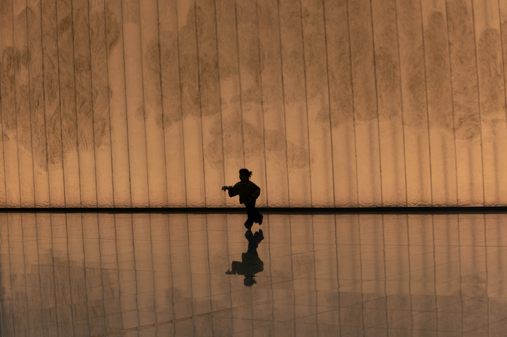
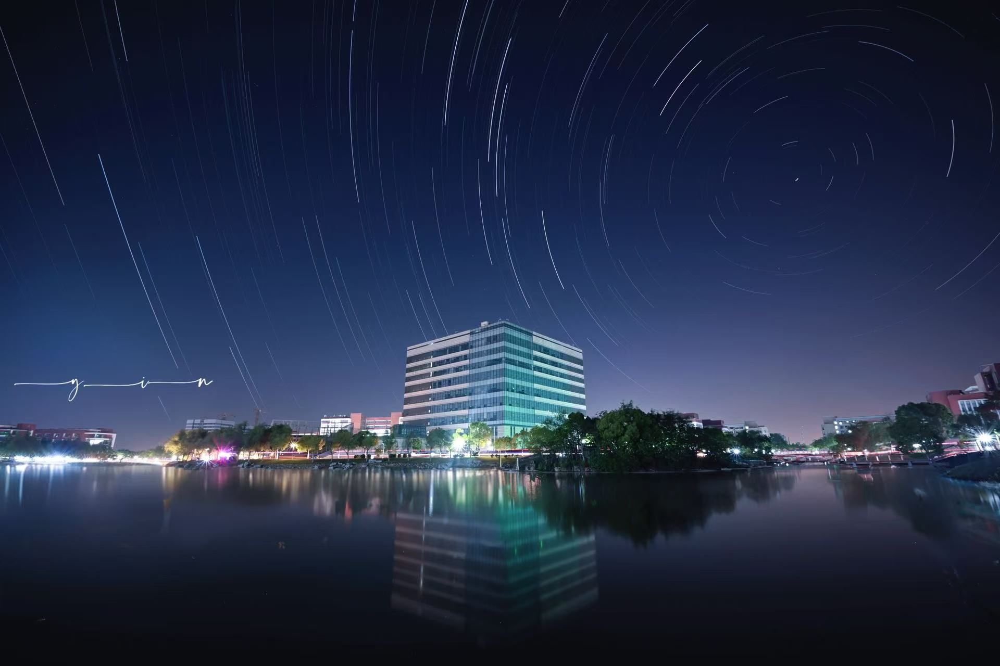
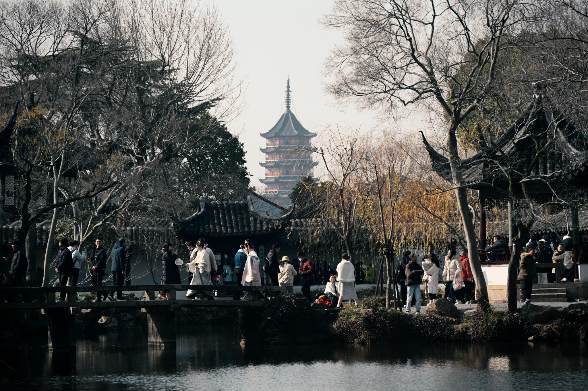

光影叙事
奔跑的剪影
暖色墙面、倒影与人物剪影构成了一次近乎舞台化的瞬间。
我更愿意把摄影理解为一种观看秩序：在校园、城市、园林与自然之间，把那些短暂、边缘、容易被忽略的瞬间，整理成可以被再次进入的视觉现场。
Curated Selection
这里把三张气质最强的作品作为首页展墙：一个关于人和空间，一个关于校园与星轨，一个关于古典园林中的当代生活。它们共同构成这个作品集的视觉入口。

暖色墙面、倒影与人物剪影构成了一次近乎舞台化的瞬间。

长曝光把校园放进了更大的时间尺度。

古典空间没有停在过去，它依然在人群中继续发生。
Gallery
按作品气质自动整理为六类：光影叙事、自然风物、校园建筑、城市纪实、古建园林、实验/观念影像。可以筛选、搜索，也可以点击任意作品进入全屏观片模式。
About
观察日常空间里的光线、秩序、偶然性与人的存在感。
Photographer Statement
Inn Jan 的摄影从校园、城市街角、自然细部与古典园林出发，关注光线如何改变空间的情绪，也关注人的尺度如何进入建筑、植物和天空。作品并不追求单一题材，而是把“观看”本身作为线索：低机位、长曝光、运动模糊、剪影、遮挡和留白，都是重新组织现实的方法。
这个作品集以“光影档案”为核心，将十二张作品整理为不同系列：有关于空间的安静观看，也有关于运动和符号的实验性表达。它们共同构成一种年轻摄影者的视觉习惯——敏感、克制、好奇，并且始终愿意等待画面自己出现。
从校园与生活环境出发，建立最初的视觉题材：湖面、建筑、天空、树影与日常路口。
开始尝试长曝光、运动模糊、强对比剪影等手法，让照片不止于记录，而产生更明确的视觉语言。
逐渐形成“光影—空间—人”的作品逻辑：在普通场景中寻找能被放大的秩序与情绪。
Contact
如果你想约拍、交流摄影作品、获取高清图或合作拍摄，可以通过邮件联系。表单会自动生成邮件内容，不会上传任何信息到服务器。
可接受校园活动记录、个人形象照、城市纪实、旅行影像与作品集合作。